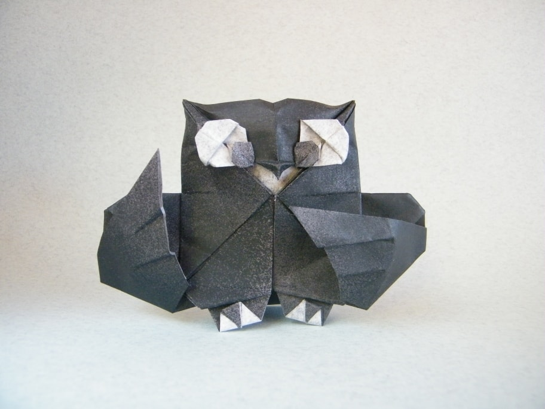
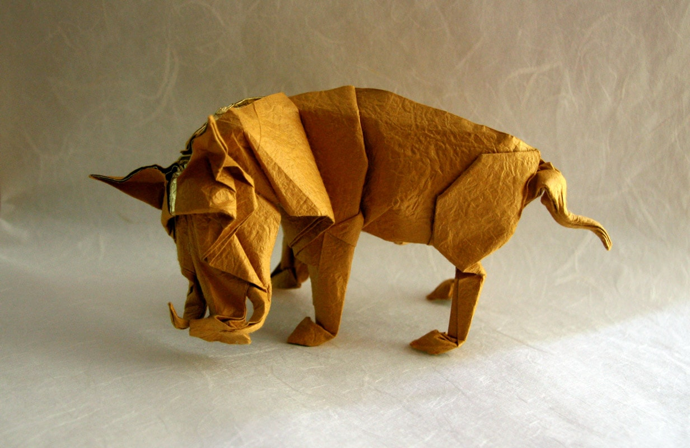

these are some fun facts
any owl species have asymmetrical ears. ... Many owl species have asymmetrical ears. ... The eyes of an owl are not true “eyeballs.” Their tube-shaped eyes are completely immobile, providing binocular vision which fully focuses on their prey and boosts depth perception. Owls can rotate their necks 270 degrees. ... A group of owls is called a parliament.
Their tusks are enlarged canine teeth that protrude upwards from its mouth. ... Calloused pads on warthogs' wrists help protect them while they graze on bended forelegs. ... A variety of predators target warthogs, including lions, leopards, cheetahs, hyenas, wild dogs and crocodiles.